在三東面的「삼동면사무소」巴士站下了車, 從昌善橋橋頭旁的崎嶇石級來到知足海峽的岸邊, 接著沿海邊一直朝西走, 走了約半小時, 拐個彎, 看見伸出海中的橋樑, 那裡便是竹防廉戶外展示館, 終於到達啦!

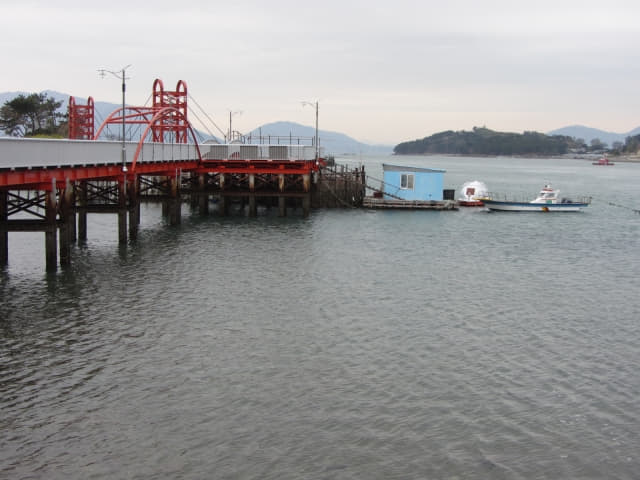
很心急的向竹防廉的入口走去。
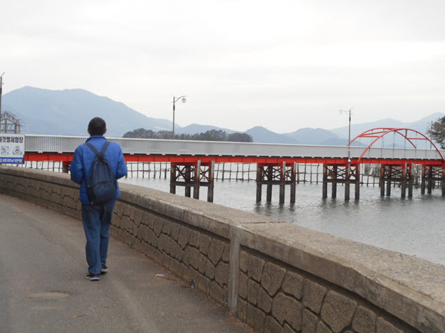
鐵門上鎖的! 已經關門? 或是今天閉館? 吳係嗎? 大佬, 又玩呢D野!
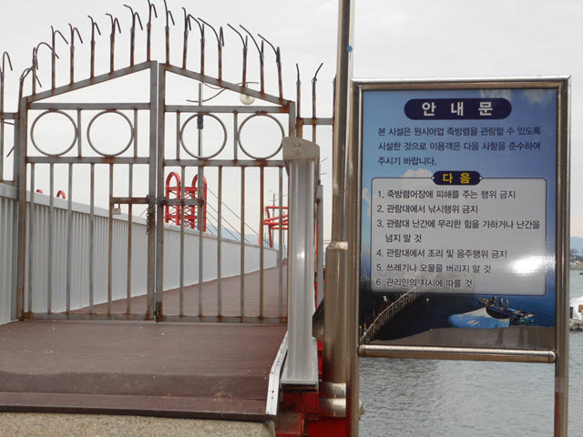
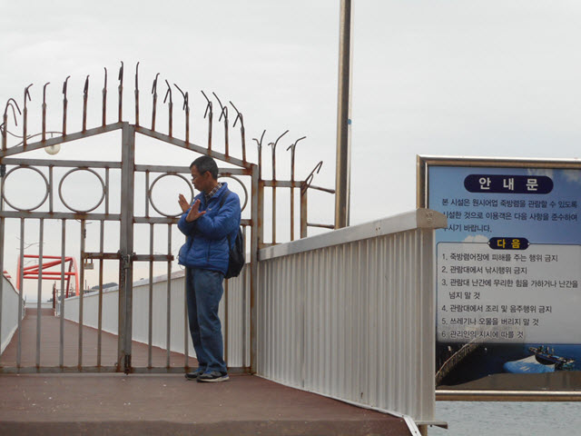
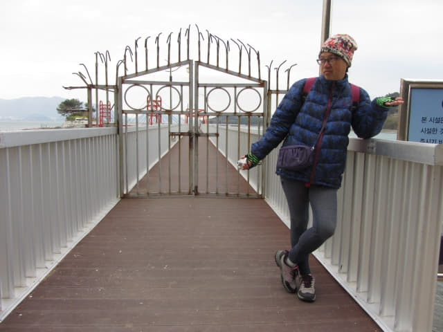
恐怕回來後有網友說鐵門雖然上了鎖, 但是可以入去的, 這次不用客氣了, 一於拼命大力搖, 「砰嘭~~~~砰嘭~~~~砰嘭~~~~~」。
「喂~~~~ 唔好再搖啦~~~ 鐵閘就快冧啦! 到時真是可以入去啦! 不過很快會有警察來添!」
唉! 我可以證實, 門確實是上了鎖的!
沒辦法, 唯有在外面看看算了。
鐵閘入口前有竹防廉的介紹。
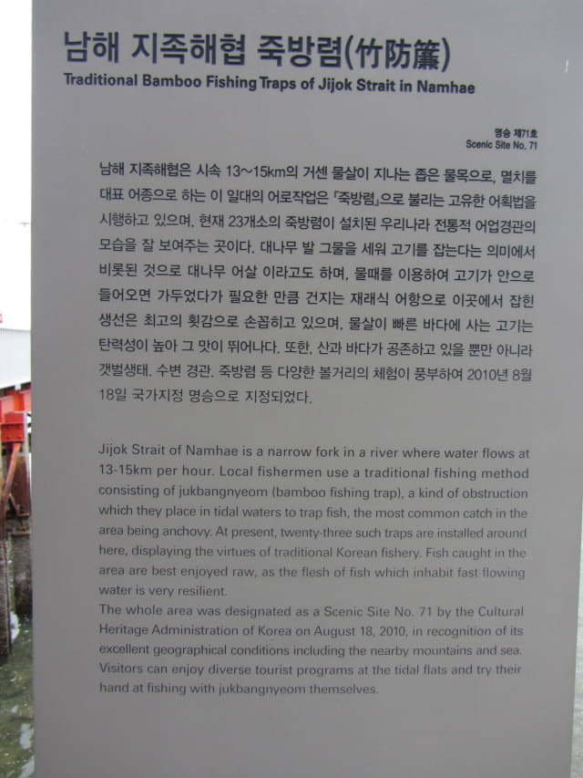
Traditional Bamboo Fishing Traps of Jijok Strait in Namehae
Jijok Strait of Namhae is a narrow fork in a river where water flows at 13-15km per hour. Local fishermen use a traditional fishing method consisting of jukbangnyeom (bamboo fishing trap), a kind of obstruction which they place in tidal waters to trap fish, the most common catch in the area being anchovy. At present, twenty-three such traps are installed around here, displaying the virtues of traditional Korean fishery. Fish caught in the area are best enjoyed raw, as the flesh of fish which inhabit fast-flowing water is very resilient.
The whole area was designated as a Scenic Site No. 71 by the Cultural Heritage Administration of Korea on August 18, 2010, in recognition of its excellent geographical conditions including the nearby mountains and sea. Visitors can enjoy diverse tourist programs at the tidal flats and try their hand at fishing with jukbangnyeom themselves.
知足海峽共有二十三個竹防廉, 分佈位置如下。
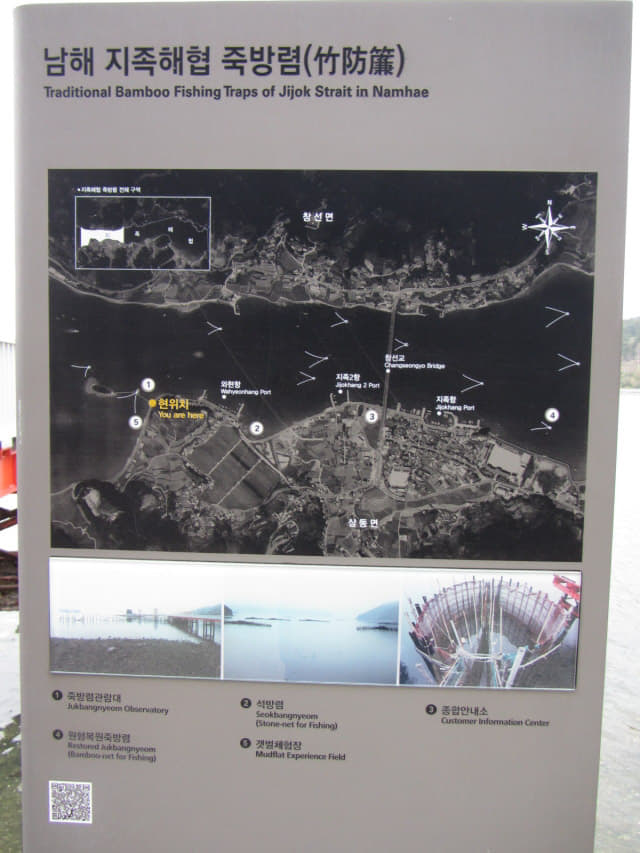
看完竹防廉的簡單介紹, 又了解多一些, 心情好一些了, 接著在外面嘗試用不同角度看看。
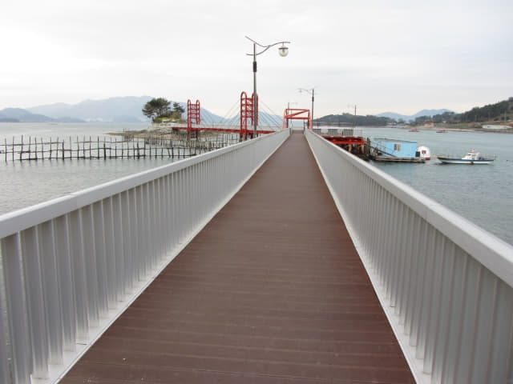
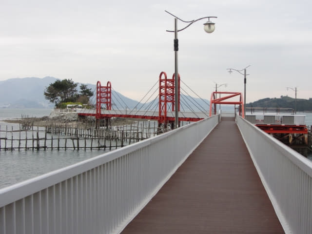
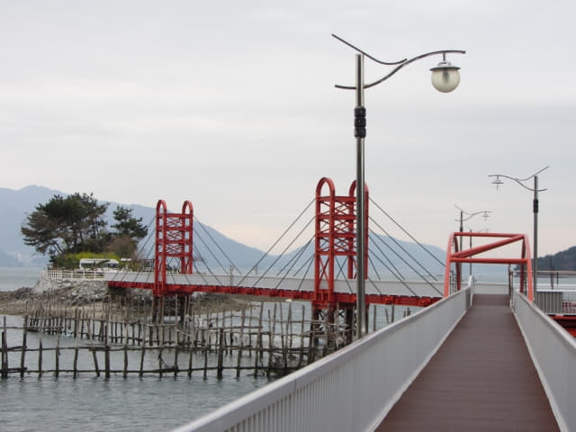
如果可以進去, 可以近距離參觀竹防廉的設計。以下四張照片是網上提供的。
圖片網上提供。
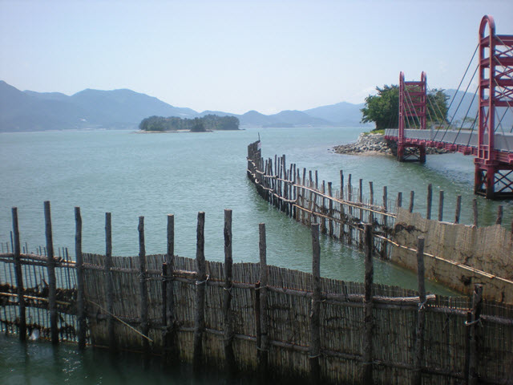
圖片網上提供。

圖片網上提供。當魚兒進入竹防廉後, 很難找到窄狹的出口, 就算找到, 水流在收窄的入口加倍湍急的湧進, 根本不可能逆水游出。其實方法有點像我們小時候利用「凹底酒瓶」放在在河中捉魚, 收穫同樣很豐富的。
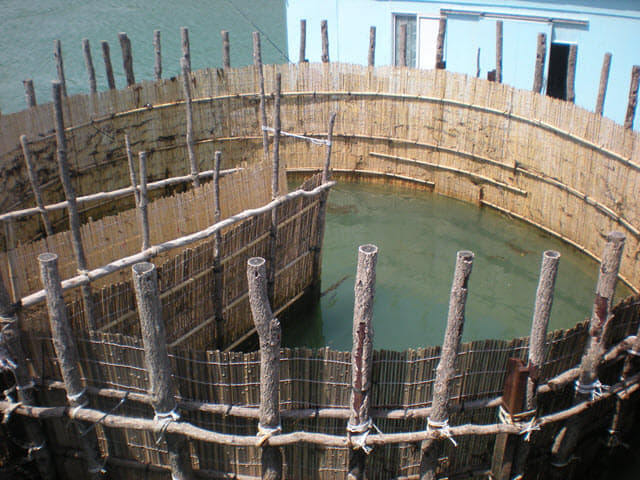
圖片網上提供。
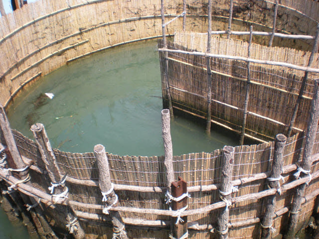
千里迢迢來到, 當然要在竹防廉外面流連多一會啦!
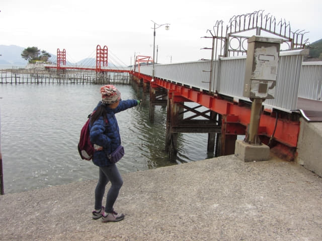
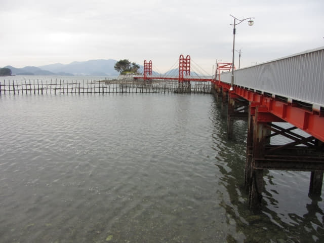
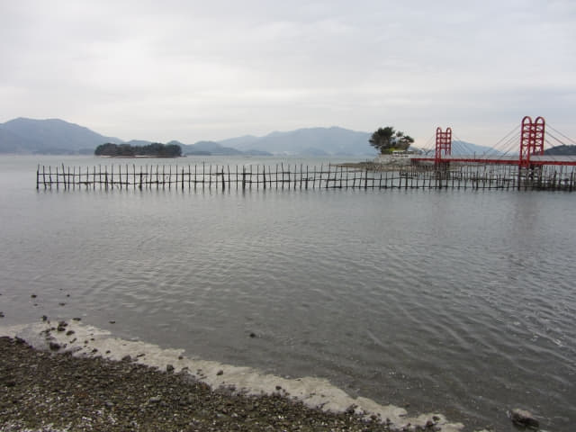
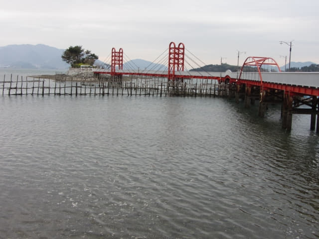

走遠一些看, 開始看到竹防廉的「V」型入口。
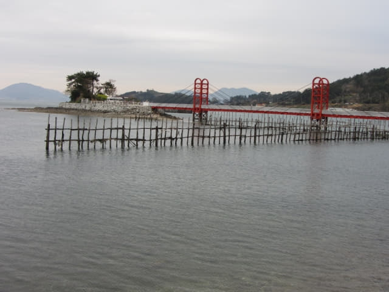
可以清楚看到竹防廉的「V」型入口了。
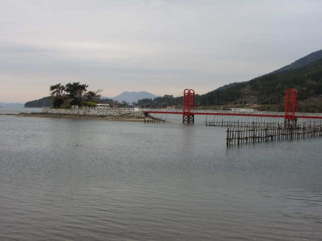
「V」型尾部困著魚兒的圓形竹防廉也清楚看到了!
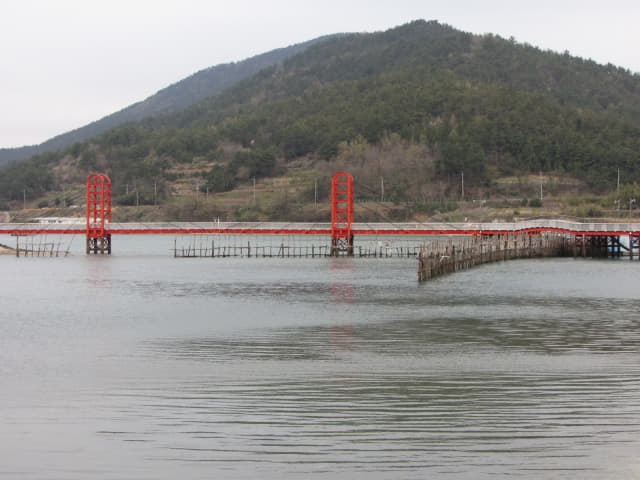
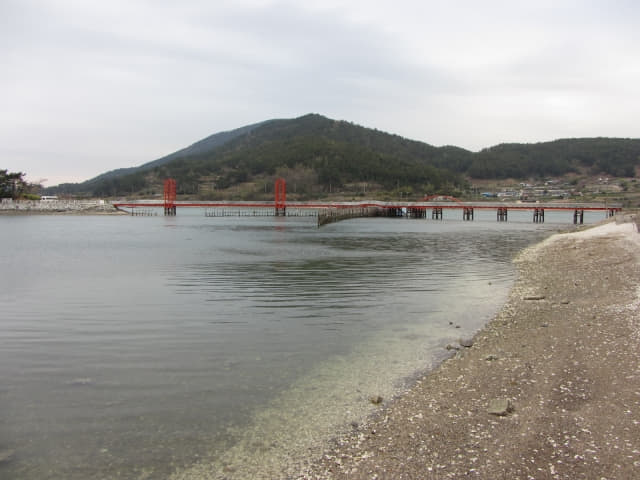
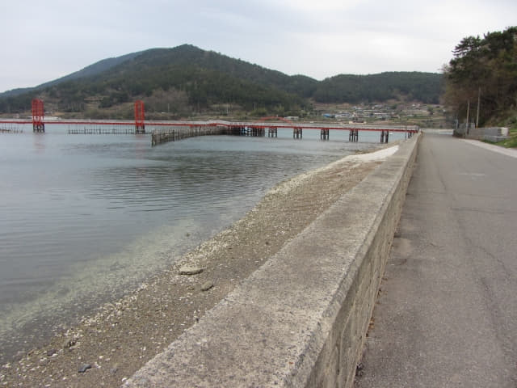